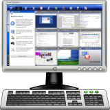

<div class="header"><h1 class="title">iTalc Intelligent Teaching</h1></div>

<div class="main">

<div class="content"><ul>
	<li><em>iTalc</em> allows a lecturer to take control of student desktops.</li>
	<li>Broadcast a desktop session to all users to demonstrate a new concept.</li>
	<li>Monitor user sessions to keep tabs on mischievous users.</li>
</ul></div>

</div>


